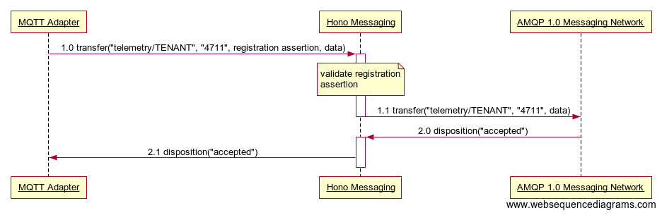
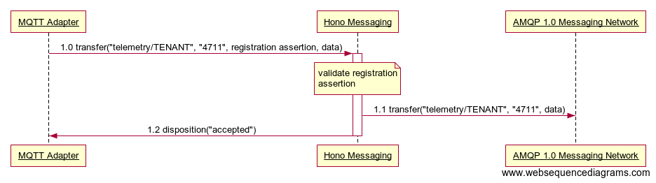
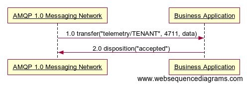

Telemetry API
The Telemetry API is used by Devices to send data downstream. Business Applications and other consumers use the API to receive data published by devices belonging to a particular tenant.
The Telemetry API is defined by means of AMQP 1.0 message exchanges, i.e. a client needs to connect to Hono using AMQP 1.0 in order to invoke operations of the API as described in the following sections. Throughout the remainder of this page we will simply use AMQP when referring to AMQP 1.0.
Southbound Operations
The following operations can be used by Devices and/or Protocol Adapters (to which the devices are connected) to publish telemetry data for consumption by downstream consumers like Business Applications.
Both Devices as well as Protocol Adapters will be referred to as clients in the remainder of this section.
Upload Telemetry Data
Preconditions
- Client has established an AMQP connection with Hono’s Telemetry endpoint.
- Client has established an AMQP link in role sender with Telemetry endpoint using target address
telemetry/${tenant_id}where${tenant_id}is the ID of the tenant that the client wants to upload telemetry data for. - The device for which the client wants to upload telemetry data has been registered (see Device Registration API).
- Client has obtained a registration assertion for the device from the Device Registration service by means of the assert Device Registration operation.
The client indicates its preferred message delivery mode by means of the snd-settle-mode and rcv-settle-mode fields of its attach frame during link establishment. Hono will receive messages using a delivery mode according to the following table:
| snd-settle-mode | rcv-settle-mode | Delivery semantics |
|---|---|---|
unsettled, mixed |
first |
Hono will forward messages to the downstream AMQP 1.0 Messaging Network and will forward AMQP disposition frames received from the AMQP 1.0 Messaging Network to the client as is. It is up to the client’s discretion if and how it processes these disposition frames. Hono will accept any re-delivered messages. Using unsettled for the snd-settle-mode allows for clients to implement both AT LEAST ONCE or AT MOST ONCE delivery semantics, depending on whether a client waits for and considers the disposition frames it receives from Hono or not. This is the recommended mode for uploading telemetry data. |
settled |
first |
Hono will acknowledge and settle received messages spontaneously before forwarding the messages to the downstream AMQP 1.0 Messaging Network. Hono will ignore any AMQP disposition frames it receives from the AMQP 1.0 Messaging Network. Using settled for the snd-settle-mode allows for clients to implement AT MOST ONCE delivery semantics only. This is the fastest mode of delivery but has the drawback of less reliable end-to-end flow control and potential loss of messages without notice. |
All other combinations are not supported by Hono and result in a termination of the link.
Message Flow
The following sequence diagram illustrates the flow of messages involved in the MQTT Adapter uploading an unsettled telemetry data message to Hono Messaging’s Telemetry endpoint.

- MQTT Adapter sends telemetry data for device
4711.- Hono Messaging successfully verifies that device
4711ofTENANTexists and is enabled by means of validating the registration assertion included in the message (see Device Registration) and forwards the message to the AMQP 1.0 Messaging Network.
- Hono Messaging successfully verifies that device
- AMQP 1.0 Messaging Network acknowledges reception of the message.
- Hono Messaging forwards the disposition frame to the adapter.
Hono Messaging does not act on any disposition frames it receives from the AMQP 1.0 Messaging Network in any specific way. It is therefore up to the MQTT Adapter to choose whether it wants to wait for disposition frames forwarded by Hono Messaging to determine whether the message has been delivered successfully to the consumer or to simply ignore any disposition frames it receives. The former will result in AT LEAST ONCE delivery semantics, the latter will result in AT MOST ONCE semantics.
The following sequence diagram illustrates the flow of messages involved in the MQTT Adapter uploading a pre-settled telemetry data message to Hono Messaging’s Telemetry endpoint.

- MQTT Adapter sends telemetry data for device
4711.- Hono Messaging successfully verifies that device
4711ofTENANTexists and is enabled by means of validating the registration assertion included in the message (see Device Registration) and forwards the message to the AMQP 1.0 Messaging Network. - Hono Messaging acknowledges reception of the message.
- Hono Messaging successfully verifies that device
Message Format
The following table provides an overview of the properties a client needs to set on an Upload Telemetry Data message.
| Name | Mandatory | Location | Type | Description |
|---|---|---|---|---|
| content-type | yes | properties | symbol | SHOULD be set to application/octet-stream if the message payload is to be considered opaque binary data. In most cases though, the client should be able to set a more specific content type indicating the type and characteristics of the data contained in the payload, e.g. text/plain; charset="utf-8" for a text message or application/json etc. |
| device_id | yes | application-properties | string | MUST contain the ID of the device the data in the payload has been reported by. |
| reg_assertion | yes | application-properties | string | A JSON Web Token issued by the Device Registration service asserting the device’s registration status. |
| ttd | no | application-properties | int | ‘time til disconnect’ : in context with the creation-time of the AMQP 1.0 message it defines the time interval in seconds in which a device should be available for receiving upstream data. If this property is missing, it shall be considered as not being known if the device is ready for receiving a message. If it has the value -1, the device shall be considered as being always ready to receive a message. |
| creation-time | see description | properties | timestamp | the time when this message was created (see the AMQP 1.0 specification for details). This is mandatory if ttd is set. |
The body of the message MUST consist of a single AMQP Data section containing the telemetry data. The format and encoding of the data MUST be indicated by the content-type and (optional) content-encoding properties of the message.
Any additional properties set by the client in either the properties or application-properties sections are preserved by Hono, i.e. these properties will also be contained in the message delivered to consumers. However, the reg_assertion contained in the application-properties will not be propagated downstream.
Note that Hono does not return any application layer message back to the client in order to signal the outcome of the operation.
When a client sends a telemetry message that cannot be processed because it does not conform to the message format defined above, Hono spontaneously settles the message transfer using the AMQP REJECTED outcome containing an amqp:decode-error. Clients should not try to re-send such rejected messages unaltered.
When a client sends a telemetry message which contains a registration assertion that cannot be validated, Hono spontaneously settles the message transfer using the AMQP REJECTED outcome containing an amqp:precondition-failed. Clients should not try to re-send such rejected messages unaltered.
In all other cases, Hono forwards the message to the AMQP 1.0 Messaging Network and sends a disposition frame to the client according to the message flows defined above.
Northbound Operations
Receive Telemetry Data
Hono delivers messages containing telemetry data reported by a particular device in the same order that they have been received in (using the Upload Telemetry Data operation defined above). Hono MAY drop telemetry messages that it cannot deliver to any consumers. Reasons for this include that there are no consumers connected to Hono or the existing consumers are not able to process the messages from Hono fast enough. Hono supports multiple non-competing Business Application consumers of telemetry data for a given tenant. Hono allows each Business Application to have multiple competing consumers for telemetry data for a given tenant to share the load of processing the messages.
Preconditions
- Client has established an AMQP connection with Hono.
- Client has established an AMQP link in role receiver with Hono using source address
telemetry/${tenant_id}where${tenant_id}represents the ID of the tenant the client wants to retrieve telemetry data for.
Hono supports both AT MOST ONCE as well as AT LEAST ONCE delivery of telemetry messages. However, clients SHOULD use AT LEAST ONCE delivery in order to support end-to-end flow control and therefore SHOULD set the snd-settle-mode field to unsettled and the rcv-settle-mode field to first in their attach frame during link establishment.
A client MAY indicate to Hono during link establishment that it wants to distribute the telemetry messages received for a given tenant among multiple consumers by including a link property subscription-name whose value is shared by all other consumers of the tenant. Hono ensures that messages from a given device are delivered to the same consumer. Note that this also means that telemetry messages MAY not be evenly distributed among consumers, e.g. when only a single device sends data. NB This feature is not supported yet.
In addition a client MAY include a boolean link property ordering-required with value false during link establishment in order to indicate to Hono that it does not require messages being delivered strictly in order per device but instead allows for messages being distributed evenly among the consumers. NB This feature is not supported yet.
Message Flow
The following sequence diagram illustrates the flow of messages involved in a Business Application receiving a telemetry data message from Hono. The delivery mode used is AT LEAST ONCE.

- AMQP 1.0 Messaging Network delivers telemetry message to Business Application.
- Business Application acknowledges reception of message.
The Business Application can only consume telemetry messages that have been uploaded to Hono after the Business Application has established the link with the AMQP 1.0 Messaging Network. This is because telemetry messages are not durable, i.e. they are not persisted in Hono in order to be forwarded at a later time.
Message Format
The format of the messages containing the telemetry data is the same as for the Upload Telemetry Data operation.